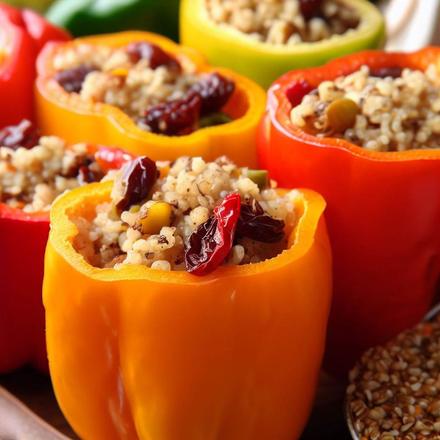

Recettes végétariennes sucrées
Poivrons Farcis au Quinoa et aux Fruits Secs

Dans cette création culinaire, les poivrons colorés deviennent des bols délicieux et vibrants.
Remplis d'un mélange irrésistible de quinoa tendre, de fruits secs sucrés et de saveurs exquises, ces poivrons farcis sont un véritable régal pour les amateurs de cuisine végétarienne.
Les saveurs du quinoa, des fruits secs et des épices se marient parfaitement, tandis que la texture tendre des poivrons ajoute une sensation agréable à chaque bouchée.
Préparation
15 min
Cuisson
40 min
Portions
4
Niveau
Facile
Calories
300 kcal
Ingrédients
- 4 poivrons de taille moyenne (de différentes couleurs)
- 1 tasse de quinoa cuit
- 1/2 oignon rouge, haché finement
- 2 gousses d'ail, émincées
- 1/2 tasse de mélange de fruits secs (raisins, abricots, cranberries), hachés
- 1/4 tasse de noix concassées (cajou, amandes)
- 1/2 cuillère à café de paprika
- 1/2 cuillère à café de cumin moulu
- Sel et poivre, au goût
- 2 cuillères à soupe d'huile d'olive
- Persil frais, haché (facultatif)
Ustensiles nécessaires
- Un couteau de cuisine
- Une planche à découper
- Une poêle
- Une plaque de cuisson
- Du papier sulfurisé
- Une spatule
- Une cuillère à soupe
Préparation
- Préchauffez votre four à 180°C. Préparez une plaque de cuisson recouverte de papier sulfurisé.
- Lavez les poivrons, coupez les sommets et retirez les graines et les membranes blanches à l'intérieur. Réservez les sommets coupés pour la garniture.
- Dans une poêle, faites chauffer l'huile d'olive à feu moyen. Ajoutez l'oignon haché et l'ail émincé, et faites-les revenir pendant environ 3 minutes jusqu'à ce qu'ils soient tendres et légèrement dorés.
- Ajoutez le quinoa cuit, les fruits secs hachés, les noix concassées, le paprika, le cumin, le sel et le poivre dans la poêle. Mélangez bien tous les ingrédients.
- Remplissez chaque poivron avec le mélange de quinoa et de fruits secs. Replacez les sommets coupés sur les poivrons farcis.
- Disposez les poivrons farcis sur la plaque de cuisson préparée. Enfournez-les et faites-les cuire pendant environ 35 à 40 minutes, jusqu'à ce que les poivrons soient tendres et légèrement dorés.
- Retirez les poivrons du four et laissez-les refroidir légèrement avant de les servir. Garnissez-les de persil frais haché si désiré.
- Servez les poivrons farcis chauds en tant que plat principal végétarien délicieux et équilibré.
Accompagnements suggérés
- Salade d'épinards et de fraises : une salade fraîche et colorée pour compléter le repas.
- Purée de pommes de terre : une option crémeuse et réconfortante.
- Pain à l'ail : servez avec du pain à l'ail frais pour tremper dans la sauce.
Profitez de ce plat coloré et nutritif !